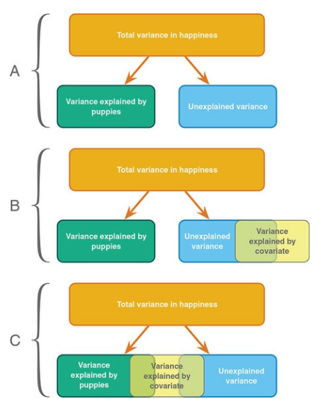

14. ANCOVA
In this lecture we aim to:
- Introduce ANOVA
- Discuss follow-up tests
- Show ANOVA in JASP
Reading: Chapter 11
ANCOVA
ANCOVA
Determine main effect while accounting for covariate
- 1 dependent variable
- 1 or more independent variables
- 1 or more covariates
A covariate is a variable that can influence the DV. By adding a covariate, we reduce error/residual in the model.
Assumptions
- Same as ANOVA
- Independence of the covariate and treatment effect §12.5.1.
- No difference on ANOVA with covar and independent variable
- Matching experimental groups on the covariate
- Homogeneity of regression slopes §12.5.2.
- Visual: scatterplot dep var * covar per condition
- Testing: interaction indep. var * covar
Independence of the covariate and treatment effect (Fig 12.2)

Data example
We want to test the difference in extraversion but want to also account for openness to experience.
- Dependent variable: Extraversion
- Independent variabele: Nationality (#groups \(= k = 3\))
- Dutch
- German
- Belgian
- Covariate: Openness to experience
Define the model
\[{extraversion} = {model} + {error}\]
\({model} = {independent} + {covariate}\) \(\color{white}{model} = {nationality} + {openness}\)
\(\color{white}{model}\)
Linear model with \(k-1\) dummy variables:
\[\hat{y} = b_0 + b_1 {dummy}_1 + b_2 {dummy}_2 + b_3 covar\]
The data
Dummies
Observed group means
aggregate(extraversion ~ nationality, data, mean) nationality extraversion
1 Dutch 39.68286
2 German 40.86714
3 Belgian 37.60000Model fit without covariate
What are the beta coefficients when we fit a model that only has nationality as a predictor variable?
fit.group <- lm(extraversion ~ nationality, data); fit.group$coefficients (Intercept) nationalityGerman nationalityBelgian
39.682857 1.184286 -2.082857 \(\beta_{0} = 39.68\)
\(\beta_{German} = 1.18\)
- Prediction for German: 39.68 + 1.18 = 40.86
\(\beta_{Belgian} = -2.08\)
- Prediction for Belgian: 39.68 + -2.08 = 37.6
Model fit with only covariate
What are the beta coefficients when we fit a model that only has openness as predictor variable?
fit.covar <- lm(extraversion ~ openness, data); fit.covar$coefficients(Intercept) openness
24.993473 1.799697 \(\beta_{0} = 24.99\)
\(\beta_{Open} = 1.8\)
Model fit with all predictor variables (factor + covariate)
What are the beta coefficients when we fit the full model (i.e., with both predictor variables)?
fit <- lm(extraversion ~ nationality + openness, data); fit$coefficients (Intercept) nationalityGerman nationalityBelgian openness
25.9029405 -0.1220751 -2.7012528 1.8036540 \(\beta_{Dutch} = 25.9\)
\(\beta_{German} = -0.12\)
\(\beta_{Belgian} = -2.7\)
\(\beta_{Open} = 1.8\)
Predictions of the full model
For a German with a score of 8 on Openness:
fit <- lm(extraversion ~ nationality + openness, data); fit$coefficients (Intercept) nationalityGerman nationalityBelgian openness
25.9029405 -0.1220751 -2.7012528 1.8036540 \(\beta_{0} = 25.9\)
\(\beta_{German} = -0.12\)
\(\beta_{Open} = 1.8\)
- Prediction for German: 25.9 + -0.12 + 8 * 1.8 = 40.21
How about a Belgian with 6 Openness?
Total variance visual
Explained by group model
The model that predicts only using group means:
\(\hat{y} = b_0 + b_1 {dummy}_1 + b_2 {dummy}_2\)
\(\hat{y} = 39.68 + 1.18 \times {dummy}_1 + -2.08 \times {dummy}_2\)
Explained by group model - visual
Explained by covariate model
The model that predicts only using openness:
\(\hat{y} = b_0 + b_3 covar\)
\(\hat{y} = 24.99 + 1.8 \times {Openness}\)
Explained by covariate model - visual
Explained by full model
The model that predicts with group and covariate:
\(\hat{y} = b_0 + b_1 {dummy}_1 + b_2 {dummy}_2 + b_3 covar\)
\(\hat{y} = 25.9 + -0.12 \times {dummy}_1 + -2.7 \times {dummy}_2 + 1.8 \times {Openness}\)
Explained by full model - visual
Unexplained variance (group and cov)
Divide model sum of squares
Divide model sum of squares
Model SS of full model:
SS.model[1] 91.38149To see what is explained by group, we subtract the Model SS of the covariate model:
SS.group <- SS.model - SS.model.covar; SS.group ## SS.group corrected for covar[1] 32.58198To see what is explained by covariate, we subtract the Model SS of the group model:
SS.covar <- SS.model - SS.model.group; SS.covar ## SS.covar corrected for group[1] 53.07971F-ratio
\(F = \frac{{MS}_{model}}{{MS}_{error}} = \frac{{SIGNAL}}{{NOISE}}\)
[1] 3.978448\(P\)-value

Alpha & Power
Power becomes quite abstract when we increase the complexity (i.e., number of predictors) of our models. We can make an F-distribution that symbolizes the alternative distribution by shifting the distribution more to the right (although the interpretability becomes pretty murky..)
Adjusted/marginal means
Marginal means are estimated group means, while keeping the covariate equal across the groups
What are extraversion averages in each group, if they would all score the same on openness?
See also this blogpost
Adjusted/marginal means
Adjusted:
nationality mean.adj
1 Dutch 40.32444
2 German 40.20237
3 Belgian 37.62319Observed:
nationality extraversion
1 Dutch 39.68286
2 German 40.86714
3 Belgian 37.60000JASP

Closing
Recap
- We can add a continuous predictor to the ANOVA model, to reduce the overall model error
- With multiple predictors, we need to check:
- Whether there is an interaction effect
- Whether the predictors are associated
Recommended Exercises
Contact